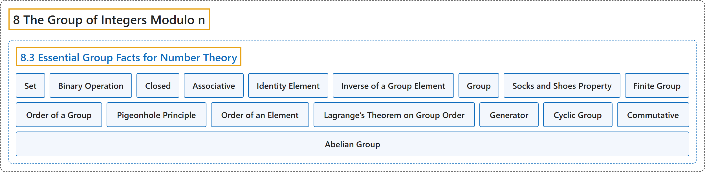

8.3 Essential Group Facts for Number Theory
Classification

Glossary
| Term | Definition | 中文翻译 | Source |
|---|---|---|---|
| 8.3 Essential Group Facts for Number Theory 数论必需的群论事实 |
(No definition) | （无定义） | Crisman, 2024, section 8.3 |
| Set 集合 |
"Sets are just what you think. They are collections of (mathematical) stuff." | 集合就是你想的那样，是 （数学）对象的汇集。 | Crisman, 2024, subsubsection 8.3.1.1 |
| Binary Operation 二元运算 |
"A binary operation is a set with a multiplication table on it. That’s it." | 二元运算就是带有一张乘法表的集合。仅此而已。 | Crisman, 2024, subsubsection 8.3.1.2 |
| Closed 封闭的 |
"A binary operation is called closed if you don’t get anything outside the set with your operation." | 若运算的结果不会跑到集合之外，就称这个二元运算是封闭的。 | Crisman, 2024, subsubsection 8.3.1.3 |
| Associative 结合的 |
"An operation is associative if it doesn’t matter how you put parentheses in." | 若括号怎么加都无所谓，就称运算是结合的。 | Crisman, 2024, subsubsection 8.3.1.4 |
| Identity Element 单位元 |
"Much more important is whether your operation has an identity element. You have seen this many times before in addition and multiplication. \(a+0=a=0+a\text{ and }a\cdot 1=a=1\cdot a\). When we turn this into abstract math, we say that an identity for a general operation \(*\) on a set \(S\) is an element, conveniently called \(e\), which has the very nice property that if you \(*\) by it, you get the same thing back." | 更重要的是你的运算是否有单位元。你以前在加法和乘法中已经多次见过它。\(a+0=a=0+a\text{ and }a\cdot 1=a=1\cdot a\)。把它变成抽象数学时，我们说集合 \(S\) 上一般运算 \(*\) 的单位元是一个元素，方便起见记作 \(e\)，它有一个很好的性质：用它去 \(*\)，得到的还是原来的东西。 | Crisman, 2024, subsubsection 8.3.1.5 |
| Inverse of a Group Element 群元素的逆 |
"Generalizing this, if \(a\) is an element of your set \(S\) and there is another element \(a'\) such that \(a*a'=e=a'*a\), then we call \(a'\) an inverse of \(a\)." | 推广一下，若 \(a\) 是集合 \(S\) 的元素，且有另一个元素 \(a'\) 使 \(a*a'=e=a'*a\)，就称 \(a'\) 是 \(a\) 的逆。 | Crisman, 2024, subsubsection 8.3.1.6 |
| Group 群 |
"If a set and binary operation on that set is closed and associative with identity and inverses for every element, we call that set a group." | 若一个集合及其上的二元运算封闭、满足结合律、有单位元，并且每个元素都有逆，就称这个集合为群。 | Crisman, 2024, Definition 8.3.3 |
| Socks and Shoes Property 袜子与鞋子性质 |
"The inverse of \(ab\) is \(b^{-1}a^{-1}\)." | \(ab\) 的逆是 \(b^{-1}a^{-1}\)。 | Crisman, 2024, Fact 8.3.7 |
| Finite Group 有限群 |
"A group with finitely many elements is called, unimaginatively, a finite group." | 元素个数有限的群，被毫无想象力地称为有限群。 | Crisman, 2024, subsubsection 8.3.3.3 |
| Order of a Group 群的阶 |
"The number of elements of a finite group is called the order of the group. For any old group \(G\), we use \(\vert G\vert\) as notation for its order." | 有限群的元素个数称为这个群的阶。对任意一个群 \(G\)，我们用 \(\vert G\vert\) 表示它的阶。 | Crisman, 2024, Definition 8.3.8 |
| Pigeonhole Principle 鸽巢原理 |
"(This argument, that if you fit \(n+1\) objects into \(n\) slots then there must be a repeat, is called the pigeonhole principle, among other names.)" | （这个论证，即把 \(n+1\) 个物体放进 \(n\) 个格子里必然有重复，称为鸽巢原理，也有别的名字。） | Crisman, 2024, subsubsection 8.3.3.5 |
| Order of an Element 元素的阶 |
"For a group element \(x\in G\), the least (positive) integer \(k\) such that \(x^k = e\) is called the order of the element \(x\). We write it \(\vert x\vert\), by analogy with the order of a group." | 对群元素 \(x\in G\)，使 \(x^k = e\) 的最小（正）整数 \(k\) 称为元素 \(x\) 的阶，记作 \(\vert x\vert\)，与群的阶类比。 | Crisman, 2024, Definition 8.3.10 |
| Lagrange’s Theorem on Group Order 关于群的阶的拉格朗日定理 |
"The order of any element \(x\) of \(G\) divides the order of the group itself. We can write this as \(\vert x\vert\mid \vert G\vert\)" | \(G\) 的任何元素 \(x\) 的阶都整除群本身的阶。可以写成 \(\vert x\vert\mid \vert G\vert\) | Crisman, 2024, Theorem 8.3.12 |
| Generator 生成元 |
"This element, whose powers run through all \(n\) elements of \(G\), is called a generator of the group." | 这个其幂遍历 \(G\) 的全部 \(n\) 个元素的元素，称为群的生成元。 | Crisman, 2024, subsubsection 8.3.3.7 |
| Cyclic Group 循环群 |
"Any group that has a generator (again, an element whose powers hit all elements of the group) is called a cyclic group." | 任何有生成元的群（再说一遍，生成元是其幂能取遍群的所有元素的元素）称为循环群。 | Crisman, 2024, subsubsection 8.3.3.7 |
| Commutative 交换的 |
"Namely, it doesn’t matter what order you do the operation in. (Such an operation is called commutative.)" | 也就是说，运算的先后顺序无所谓。（这样的运算称为交换的。） | Crisman, 2024, subsubsection 8.3.3.8 |
| Abelian Group 阿贝尔群 |
"Any group which has this property, that \(a*b=b*a\) for all \(a,b\in G\), is called an Abelian group." | 任何具有这个性质，即对所有 \(a,b\in G\) 都有 \(a*b=b*a\) 的群，称为阿贝尔群。 | Crisman, 2024, subsubsection 8.3.3.8 |
References
Crisman, K.-D. (2024). Number theory: In context and interactive (June 26, 2024 edition). Gordon College. Retrieved October 29, 2026, from https://math.gordon.edu/ntic/ntic/